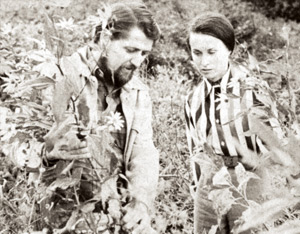

John Shuttleworth, who co-founded Mother Earth News with his first wife, Jane, in 1970, died earlier this year at his home in Evergreen, Colo. He was 71. John was preceded in death by his second wife, Wren Davenport Shuttleworth.
John and Jane Shuttleworth started Mother Earth News in 1970. John had a lifelong interest in the environment and self-reliant living.
“He always wanted people to be able to take care of themselves,” his sister, Linda Weddle of Redkey, Ind., told The Denver Post.
First based in North Madison, Ohio, the Shuttleworths would later move the magazine to Hendersonville, N.C., before selling it in 1979. Mother Earth News would change owners a few more times before its current publisher, Ogden Publications, acquired it in 2001.
"All we had was a dream," Shuttleworth said in an interview with the magazine in 1975. "Within the limits of the painfully short resources we had on hand, we wanted to publish - even if we never got past the first one - a magazine that would interest us. Not advertisers, not distributors, not the “average” reader, not the pseudo-intellectuals. Us. And we wanted a periodical that would [1] help other little people just like us live richer, fuller, freer, more self-directed lives and [2] ease us all into more actively putting the interests of the planet over and above any personal interests."
Years ago, Shuttleworth wrote to us to let us know he was keeping an eye on the magazine. His letter said: “The whole world has changed since I founded and published the magazine. So I thought I’d write and let you know that you’re doin’ just fine … I’d be doin’ a lot of things differently if I were putting the publication together today. But I’m not. It’s nice to see someone else still doing the heavy lifting. Keep on keepin’ on.”
You can read more about John’s passing in Shuttleworth led Mother Earth News from The Denver Post. And learn more about Shuttleworth himself in Part I and Part II of his Plowboy Interview with Mother Earth News.
If you knew Shuttleworth, or were simply inspired by him, you can share your thoughts by posting a comment below. We at Mother Earth News today are grateful for, and inspired by, Shuttleworth’s passion and vision. We look forward to keepin’ on.
|
 FILE PHOTO John and Jane Shuttleworth, 1975 |
|
|